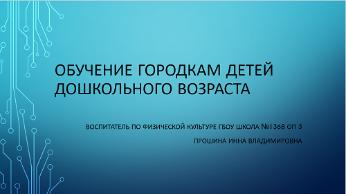

25 марта 2023 команда дошкольников и учеников начальной школы выступали в командно-личных соревнованиях «Меткая бита». Команда дошкольников заняла 12 место. Школьники выступали в личных соревнованиях.
Мы любим не только играть в Городки, а еще их рисовать и фотографировать. С 16 января по 20 марта 2023 года у нас проходили Конкурс-фестиваль детских и школьных рисунков «Городки - народная игра России» и Фотоконкурс «Играем в городки – сохраняем народные традиции России». Участие принимали и взрослые, и дети. Работы победителей школьного этапа будут отправлены в Федерацию городошного спорта Москвы для дальнейшего участия.
Любим мы играть в Городки. 11 марта 2023 года педагоги приняли участие в лично-командных соревнованиях «Кубок Москвы по городошному спорту среди женщин, посвященных празднованию Международного женского Дня 8 марта». Команда заняла 5 место, а в личных соревнованиях Ольга Евгеньевна завоевала 2 место. Поздравляем! Так держать!
Ох и напряженная неделя у нас получилась с 14 по 17 февраля 2023 Во всех возрастных группах прошли спортивные досуги, посвященные 23 февраля Дню защитника Отечества.
11.02.2023 Семья нашего воспитанника приняла участие в окружном этапе соревнований семейных команд «Веселые старты». Наша семейная команда оказалась самой быстрой! Поздравляем победителей. МОЛОДЦЫ!!!
20.01.2023 и 31.01.2023 в младших группах прошел физкультурный досуг в «Развеселая Матрешка». Спортивные досуги способствуют развитие интереса к занятиям физкультурой; закреплению изученных двигательных навыков; развитию физических качеств быстроты, ловкости, ориентированию в пространстве; формирование личностных качеств; да и просто поднимают настроение.
Хоть на улице зима, мы играем в Городки. 29.01.2023 педагоги нашей образовательной площадки и семья воспитанника подготовительной группы приняли участие в «Зимнем Фестивале «Городки для Всех».
С 23 по 27.01.2023 у нас прошло Образовательное событие Первые зимние дошкольные олимпийские игры. Хотя они и называются дошкольные, все было как на настоящей зимней Олимпиаде. И церемония Открытия с выносом флага и представлением команд и талисманов. Соревнования по различным дисциплинам: санный спорт, лыжи, керлинг. На церемонии закрытия олимпийских игр мы наградили самых выдающихся спортсменов и попращались с олимпиадой.
семейной команды Нефедова Семена (5 гр) приняла участие в Фестивале «Всей семьей на старт» среди образовательных организаций города Москвы в 2022/2023 учебном году. Район
В группах прошли турниры по шашкам. А самые сильные участники 11.11.2022 выступили на турнире «Шашки - 2022» среди воспитанников подготовительных групп нашей образовательной площадки ФОТО!!!
воспитанники подготовительных групп приняли участие в сдаче норм ГТО (I ступень). Поздравляем ребят с присвоением значков!
Педагоги нашей образовательной площадки приняли участие лично-командных соревнованиях «Открытый Кубок Москвы по городошному спорту среди смешанных команд педагогических работников образовательных учреждений».
Начался учебный год и наши ребята, те кто научился играть уверенно в шашки, приняли участие в окружном этапе Фестиваля «Юный шашист» среди воспитанников образовательных организаций Департамента образования и науки города Москвы на платформе Gambler. Играть в шашки на компьютере гораздо сложнее, но ребята справились. А любовь к шашкам захватила нас. Мы начали играть в шашки: кто-то начал только учиться, кто-то продолжал тренироваться, оттачивать свое умение. ФОТО!!!!!Вгруппах прошли турниры по шашкам.
Сегодня прошел детский спортивный досуг ФОТО!!!!!!!"Путешествие на лесную полянку"
Отличная погода как нельзя к стати для проведения турнира по городкам ФОТО!!!!"Июньская бита" среди детей летнх групп.
Педагоги совместно с детьми нашей образовательной площадки приняли участие в ежегодном Музыкально-поэтическом марафоне «Поклонимся великим тем годам…», посвященному празднованию Победы в Великой Отечественной войне, организатор Федерация городошного спорта города Москвы.
Информация обо мне
Квалификационная категория высшая
Стаж работы 17 лет
Работаю по программе, разработанной на основе примерной основной общеобразовательной программы дошкольного образования «ОТ РОЖДЕНИЯ ДО ШКОЛЫ».Под ред. Н. Е. Вераксы, Т. С. Комаровой, М. А. Васильевой, образовательной программы ДОУ - в соответствии с Федеральным государственным стандартом к структуре основной общеобразовательной программы дошкольного образования для детей старшего дошкольного возраста.
В своей педагогической практике использую различные оздоровительные технологии:
- самомассаж
- фитбол гимнастику
- упражнения зверобатики (автор С. В. Реутский)
- стрейчинг
- элементы детского фитнеса.
Целью своей профессиональной деятельности ставлю не только обучение основным видам движений, но и пропаганду ЗОЖ среди воспитанников и их семей. Для этого ежегодно организую и провожу большое количество спортивных досугов и праздников, в том числе и с участием родителей. Каждый ребенок имеет возможность принять участие и показать свои умения в спортивных состязаниях, проходящих в образовательной организации, районе, Москве.
Основное образование
ГБОУ ВПО г.Москвы МГПИ, организатор-методист дошкольного образования 2012г.Сведения о повышении квалификации и дополнительном образовании
Курс "Основы теории и методики физического воспитания ДОУ" (144ч.) МИОО 2006г.Курс "Организация физкультурно-оздаровительной работы в группах раннего возраста" (36ч.) МИОО 2011г.
Курс "Методика преподавания плавания в ДОУ" (72ч.) МИОО 2012г.
Курс "Аквааэробика в ДОУ" (36ч.) МИОО 2012г.
Курс "Организация основных видов деятельноси детей с ограниченными возможностями здоровья дошкольного возраста" (ч.) МИОО 2017г.
ФОТО СЛАЙДЕРОМ
Благодарственные письма
ФОТО СЛАЙДЕРОМГородки
Особое место в моей профессиональной деятельности занимает игра Городки. Несколько лет назад мне захотелось побольше узнать про нее. Поехала на соревнования, и так началась моя работа с Федерацией Городошного спорта города Москвы. Сотрудники ФГСМ приехали к нам в сад, привезли оборудование, провели мастер-класс, и с тех пор "Городки" - любимая игра наших воспитанников, их родителей, а также сотрудников нашего ОП. Ежегодно мы принимаем участие в различных соревнованиях, проводимых ФГСМ.
Наше дошкольное отделение участвует в проекте "Городки для дошкольников". Совместно с Федерацией Городошного спорта города Москвы мы проводим мастер классы, участвуем в соревнованиях.
-
Фотографии с тренеровок
.jpg "фотографии с занятий")
-
Соревнования 14.05.2022
.jpeg "соревнования 14.05.2022")
Информация для педагогов
Информация для родителей
С октября 2022 года я стала вести занятия в оздоровительном кружке "Физкульт привет, малыш!" Кружок организован для детей 3 -5 лет. Целью является развитие общей моторики у детей дошкольного возраста. В программу занятий входит прохождение различных полос препятствий, выполнение заданий на развитие скоростно силовых качеств, координационных способностей дошкольников. А также упражннения на укрепление мышц стопы и спины.